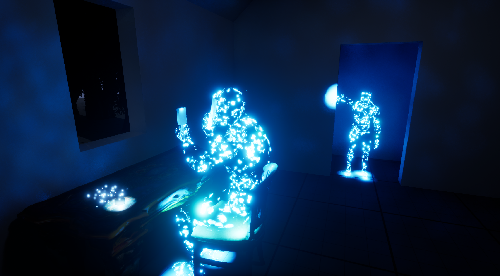

Today's plan was to actually make something cohesive. I'd played with particles, level sequences, modeling in Unreal Engine. Now was the time to put it all together.
I decided to work on the first echo that the player would find. You start in a small room with an echo object on the desk. When you interact with it, you see a ghostly figure of a woman sitting in the chair next to you, brushing her hair. After a few seconds, a child appears at the door way. A few seconds later, they both disappear.
I wa able to get this all working. There's a few things I want to tweak, such as the brightness of the particles. The effect isn't quite what I had in mind. Rather than a hologram effect, I want to go for more of a ghostly, wisp effect. But that's something I can tweak as I go on. It was important to get the mechanics working first.
I think the next step will be lighting. The sky is either far too bright, or the interior is far too dark. I need to find the right balance that sets the atmosphere I'm going for.